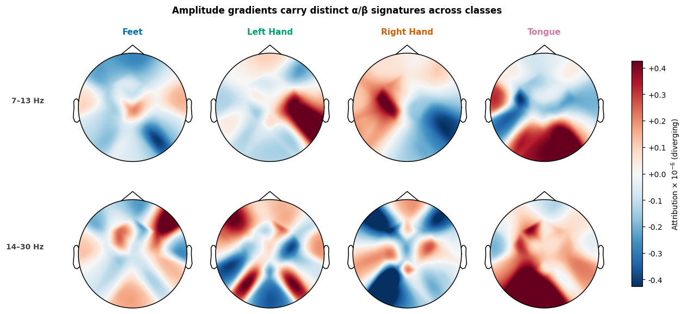
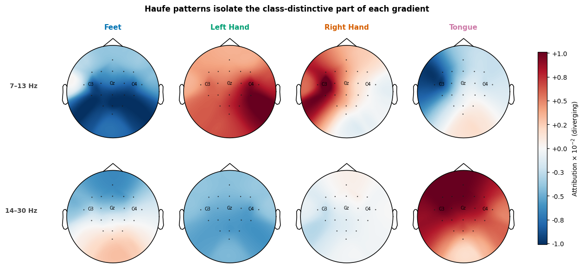
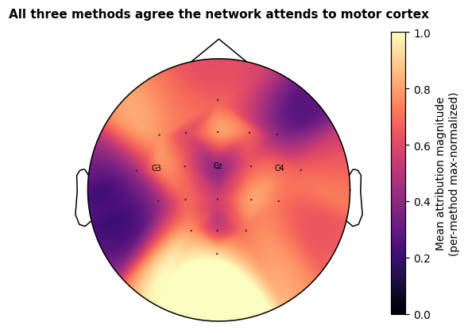
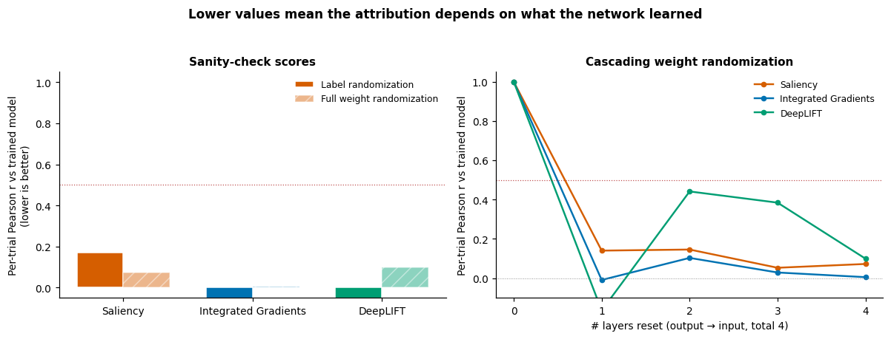
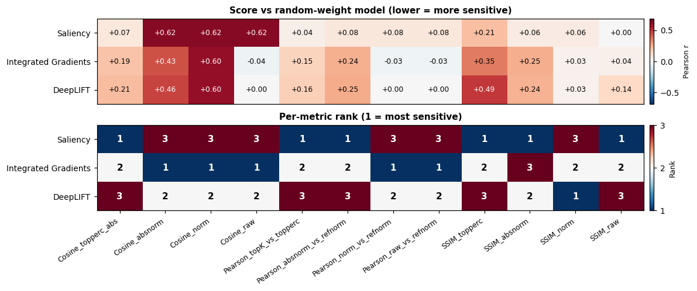

Note
Go to the end to download the full example code.
Interpretability of EEG Decoders#
This tutorial loads a pretrained ShallowFBCSPNet
decoder for BCI IV 2a motor imagery and then asks two questions a
brain-decoding paper should always answer: what part of the EEG is the
network using? and can we trust the answer? We follow the EEG-XAI
benchmark of Sujatha Ravindran & Contreras-Vidal [5], who compared
twelve back-propagation-based attribution methods on simulated EEG and
identified which ones survive adversarial sanity checks.
This tutorial reproduces the qualitative result on a real motor-imagery
recording rather than simulated data. We walk the same pipeline:
(i) population-level frequency-domain attributions and Haufe-transformed
patterns to see what the network should be using; (ii) per-trial
time-domain attributions with three captum-backed methods (Saliency,
Integrated Gradients, DeepLIFT); (iii) both sanity checks plus the
twelve attribution-quality metrics and four SSIM variants from
braindecode.visualization.metrics.
Note
TL;DR. On a properly-trained ShallowFBCSPNet the contralateral motor-imagery topography is recoverable from amplitude gradients (Fig 2), all three captum methods pass the cascade sanity check on this subject (Fig 4), and the choice of robustness metric flips the method ranking (Fig 5). DeepLIFT remains the safest default for new work because the paper’s broader benchmark identifies it as the only method that survives both sanity checks across all three simulation regimes.
# Authors: Robin T. Schirrmeister (CuttingGardens 2023 tutorial techniques)
# Bruno Aristimunha <b.aristimunha@gmail.com>
#
# License: BSD (3-clause)
import copy
import einops
import matplotlib.pyplot as plt
import mne
import numpy as np
import torch
from matplotlib import cm
from numpy import multiply
from skorch.helper import predefined_split
from braindecode import EEGClassifier
from braindecode.datasets import MOABBDataset
from braindecode.datautil import infer_signal_properties
from braindecode.models import ShallowFBCSPNet
from braindecode.preprocessing import (
Preprocessor,
create_windows_from_events,
exponential_moving_standardize,
preprocess,
)
from braindecode.util import set_random_seeds
from braindecode.visualization import (
METRIC_NAMES,
SSIM_METRIC_NAMES,
amplitude_gradients_per_trial,
cascading_layer_reset,
compute_metrics,
compute_ssim_metrics,
deep_lift,
integrated_gradients,
random_target,
saliency,
)
Loading and preparing the data#
Loading#
We use subject 3 of BCI Competition IV 2a (BNCI2014_001) via MOABB.
This is the subject the published ShallowFBCSPNet checkpoint at
braindecode/plot_bcic_iv_2a_moabb_trial was trained on, so
matching subject + preprocessing lets us skip training entirely and
load the offline-trained weights directly. Reuse on a different
subject would need fine-tuning; the attribution analysis below
assumes the model is well-fit to the data.
subject_id = 3
dataset = MOABBDataset(dataset_name="BNCI2014_001", subject_ids=[subject_id])
Preprocessing#
We mirror the preprocessing used to train the pretrained checkpoint: pick EEG channels, convert V→µV, bandpass 4–38 Hz to isolate the mu (8–13 Hz) and beta (14–30 Hz) bands where motor-imagery effects live, then exponential moving standardisation to normalise per-channel drifts. These are the standard braindecode defaults for trial-wise BCI IV 2a decoding (see Basic Brain Decoding on EEG Data).
low_cut_hz, high_cut_hz = 4.0, 38.0
ems_factor_new, ems_init_block_size = 1e-3, 1000
volt_to_microvolt = 1e6
preprocess(
dataset,
[
Preprocessor("pick_types", eeg=True, meg=False, stim=False),
Preprocessor(lambda data: multiply(data, volt_to_microvolt)),
Preprocessor("filter", l_freq=low_cut_hz, h_freq=high_cut_hz),
Preprocessor(
exponential_moving_standardize,
factor_new=ems_factor_new,
init_block_size=ems_init_block_size,
),
],
n_jobs=-1,
)
Windowing and split#
Windows start 0.5 s before each trial cue and run to the trial’s
original end, giving the network access to the pre-movement baseline.
We follow the standard BCI IV 2a split: session "0train" for
training, session "1test" (recorded on a different day) for
validation. The cross-session split is the harder regime: distribution
shift between days breaks any spurious shortcut the network might
have learned, so attribution maps computed on the validation set are
a fairer probe of what generalises.
sfreq = dataset.datasets[0].raw.info["sfreq"]
trial_start_offset_samples = int(-0.5 * sfreq)
windows_dataset = create_windows_from_events(
dataset,
trial_start_offset_samples=trial_start_offset_samples,
trial_stop_offset_samples=0,
preload=True,
)
split_by_session = windows_dataset.split("session")
train_set, valid_set = split_by_session["0train"], split_by_session["1test"]
# BCI IV 2a labels in MOABB's alphabetical order; the tuple position is
# the integer class id.
LABELS = ("feet", "left_hand", "right_hand", "tongue")
Loading a pretrained ShallowFBCSPNet#
We use ShallowFBCSPNet [1], a compact
temporal-then-spatial convolutional architecture designed to mirror
the FBCSP pipeline that dominated motor-imagery decoding before deep
learning. Rather than training from scratch (which would push the
gallery build past 15 minutes), we load the pretrained checkpoint
from braindecode/plot_bcic_iv_2a_moabb_trial: a ShallowFBCSPNet
trained for 38 epochs with AdamW (lr=6.25e-4) on this same
preprocessing pipeline, reaching 68% held-out accuracy on subject
3.
The EEGClassifier is built only to
manage the optimizer scaffolding the loader expects;
initialize() builds the
model and optimizer without running any training, then
load_params() overwrites
the weights with the published checkpoint.
cuda_available = torch.cuda.is_available()
device = "cuda" if cuda_available else "cpu"
set_random_seeds(seed=20240205, cuda=cuda_available)
signal_properties = infer_signal_properties(train_set, mode="classification")
model = ShallowFBCSPNet(
n_chans=signal_properties["n_chans"],
n_outputs=signal_properties["n_outputs"],
n_times=signal_properties["n_times"],
final_conv_length="auto",
).to(device)
classifier = EEGClassifier(
model,
criterion=torch.nn.CrossEntropyLoss,
optimizer=torch.optim.AdamW,
train_split=predefined_split(valid_set),
optimizer__lr=6.25e-4,
optimizer__weight_decay=0,
batch_size=64,
device=device,
classes=list(range(signal_properties["n_outputs"])),
)
classifier.initialize() # builds optimizer + module without training
repo_id = "braindecode/plot_bcic_iv_2a_moabb_trial"
from huggingface_hub import hf_hub_download
classifier.load_params(
f_params=hf_hub_download(repo_id, "params.safetensors"),
f_history=hf_hub_download(repo_id, "history.json"),
use_safetensors=True,
)
print(f"Loaded pretrained ShallowFBCSPNet from {repo_id}.")
# The history dataframe carries the offline training curve. We surface
# the best validation accuracy so the reader knows the model is properly
# fit before we start interpreting it.
best_valid_accuracy = max(
entry.get("valid_accuracy", 0.0) for entry in classifier.history.to_list()
)
print(f"Best offline validation accuracy: {best_valid_accuracy:.2%}")
model = classifier.module_
# Channel info needed by the topomaps below.
raw_info = valid_set.datasets[0].raw.info
channels_info = raw_info["chs"]
plt.rcParams.update(
{
"font.size": 9,
"figure.dpi": 110,
"savefig.bbox": "tight",
"font.family": "sans-serif",
"font.sans-serif": ["Helvetica", "Arial", "DejaVu Sans"],
}
)
# Okabe-Ito colorblind-safe palette, one entry per label.
LABEL_COLORS = ("#0072B2", "#009E73", "#D55E00", "#CC79A7")
Loaded pretrained ShallowFBCSPNet from braindecode/plot_bcic_iv_2a_moabb_trial.
Best offline validation accuracy: 68.40%
Frequency-domain attribution#
Population averages: amplitude gradients#
Time-domain attribution methods (saliency, IG, …) tell us when in
the trial the network attends. For motor imagery, though, the
physiologically meaningful signal lives in the spectral domain:
event-related desynchronization in mu/beta, lateralised by which
hand the subject imagines moving. amplitude_gradients_per_trial
computes ∂(class score)/∂(amplitude spectrum) by splitting each input
into amplitude and phase via rfft, treating both as leaf tensors,
inverting back to the time domain, running the model, and reading
back amps.grad. Sujatha Ravindran & Contreras-Vidal [5] test this
kind of frequency-domain probe as one of their three simulation regimes
(alongside temporal and spatial). A method that fails on the spectral
regime cannot be trusted on motor-imagery data even if it looks fine
on time-domain attribution.
For every output unit we get the gradient of the mean class score
w.r.t. the input amplitudes over all training trials. After averaging
over trials we get an (n_classes, n_chans, n_freqs) tensor.
per_trial_amplitude_gradients = amplitude_gradients_per_trial(
model, train_set, batch_size=64
)
mean_amplitude_gradients = per_trial_amplitude_gradients.mean(
axis=1
) # (n_classes, n_chans, n_freqs)
n_input_samples = train_set[0][0].shape[1]
frequencies_hz = np.fft.rfftfreq(n_input_samples, d=1.0 / sfreq)
We average the per-frequency gradients inside the canonical motor imagery bands (alpha/mu, 7–13 Hz, and beta, 14–30 Hz) and plot a topomap per class. The textbook signature is lateralised activity over the central electrodes: C3 for right-hand imagery, C4 for left-hand imagery (the contralateral motor cortex desynchronizes during imagined movement), and bilateral activity for feet/tongue. Whether we see that pattern below depends on whether the network learned the physiology or some subject-specific shortcut.
def _band_topomap_grid(
values_per_class_chan_freq,
frequency_bands,
mne_info,
labels,
title,
landmark_channels=None,
):
"""One row per frequency band, one column per class.
Color scale is set per row from the 98th-percentile absolute value
so that a single high-magnitude class can't wash out the rest of the
band. The shared colorbar on the right uses scientific notation
folded into its label, so no floating ``1e-6`` exponent appears.
Pass ``landmark_channels`` (e.g. ``{"C3", "Cz", "C4"}``) to label
those electrodes on every topomap so the reader can orient.
"""
n_bands, n_classes = len(frequency_bands), len(labels)
fig, axes = plt.subplots(
n_bands, n_classes, figsize=(2.6 * n_classes + 1.6, 2.4 * n_bands + 1.0)
)
axes = np.atleast_2d(axes)
if landmark_channels:
ch_names = mne_info["ch_names"]
names_arg = [n if n in landmark_channels else "" for n in ch_names]
sensors_arg = True
else:
names_arg = None
sensors_arg = False
band_images, band_color_limits = [], []
for row_idx, (band_low_hz, band_high_hz) in enumerate(frequency_bands):
low_freq_idx = np.searchsorted(frequencies_hz, band_low_hz)
high_freq_idx = np.searchsorted(frequencies_hz, band_high_hz) + 1
mean_in_band = values_per_class_chan_freq[
:, :, low_freq_idx:high_freq_idx
].mean(axis=2)
band_color_limit = np.percentile(np.abs(mean_in_band), 98)
band_color_limits.append(band_color_limit)
for class_idx, label in enumerate(labels):
ax = axes[row_idx, class_idx]
topomap_image, _ = mne.viz.plot_topomap(
mean_in_band[class_idx],
mne_info,
vlim=(-band_color_limit, band_color_limit),
contours=0,
cmap=cm.RdBu_r,
sensors=sensors_arg,
names=names_arg,
show=False,
axes=ax,
)
if row_idx == 0:
ax.set_title(
label.replace("_", " ").title(),
color=LABEL_COLORS[class_idx],
fontweight="bold",
fontsize=10,
)
band_images.append(topomap_image)
axes[row_idx, 0].text(
-0.18,
0.5,
f"{band_low_hz}–{band_high_hz} Hz",
transform=axes[row_idx, 0].transAxes,
ha="right",
va="center",
fontsize=9,
fontweight="bold",
color="#444",
)
# Fold the colorbar's scientific exponent into the label so it
# doesn't float as a "1e-6" annotation outside the axes.
largest_limit = max(band_color_limits)
exponent = int(np.floor(np.log10(largest_limit))) if largest_limit > 0 else 0
scale = 10**exponent
fig.suptitle(title, fontsize=11, fontweight="bold", y=0.99)
fig.subplots_adjust(right=0.88, top=0.90, wspace=0.05, hspace=0.15)
colorbar_ax = fig.add_axes([0.91, 0.18, 0.015, 0.65])
cbar = fig.colorbar(band_images[-1], cax=colorbar_ax)
cbar.formatter.set_scientific(False)
cbar.ax.yaxis.set_major_formatter(
plt.FuncFormatter(lambda v, _pos: f"{v / scale:+.1f}")
)
cbar.set_label(
f"Attribution × 10$^{{{exponent}}}$ (diverging)",
fontsize=9,
)
_band_topomap_grid(
mean_amplitude_gradients,
frequency_bands=[(7, 13), (14, 30)],
mne_info=raw_info,
labels=LABELS,
title="Amplitude gradients carry distinct α/β signatures across classes",
)

Filters → patterns (Haufe transform)#
Gradients (the network’s “filters”) mix two effects: the class-relevant signal and the noise correlations between channels and frequencies. Haufe et al. [2] show that multiplying the filters by the input covariance recovers the underlying forward patterns, i.e. what the brain actually does when a class is present, rather than what filter the network applied to detect it. This is a load-bearing distinction in the EEG literature: a backward filter can place high weight on a noise channel as a suppressor (subtracting noise from a nearby signal channel improves SNR), but the brain itself isn’t generating signal there. The forward pattern reveals the actual generators.
In practice the input covariance for amplitude features is dominated by a near-rank-1 component (the average spectrum, ~1/f). Applied directly, that component leaves a class-uniform offset on every channel and the topographies look flat. Subtracting the across-class mean from the gradients before the transform removes that shared component and reveals what is distinctive about each class.
train_inputs = np.stack([x for x, *_ in train_set])
train_amplitudes = np.abs(np.fft.rfft(train_inputs, axis=-1))
n_channels = train_amplitudes.shape[1]
n_frequencies = train_amplitudes.shape[2]
amplitude_covariance = einops.rearrange(
np.cov(
einops.rearrange(train_amplitudes, "trial channel freq -> (channel freq) trial")
),
"(chan_a freq_a) (chan_b freq_b) -> chan_a freq_a chan_b freq_b",
chan_a=n_channels,
chan_b=n_channels,
freq_a=n_frequencies,
freq_b=n_frequencies,
)
class_centered_gradients = mean_amplitude_gradients - mean_amplitude_gradients.mean(
axis=0, keepdims=True
)
haufe_patterns = einops.einsum(
class_centered_gradients,
amplitude_covariance,
"classes chan freq, chan freq chan_b freq_b -> classes chan_b freq_b",
)
_band_topomap_grid(
haufe_patterns,
frequency_bands=[(7, 13), (14, 30)],
mne_info=raw_info,
labels=LABELS,
title="Haufe patterns isolate the class-distinctive part of each gradient",
landmark_channels={"C3", "Cz", "C4"},
)

Per-trial attribution#
Three methods, three philosophies#
We now switch from population averages to per-trial attribution in
the time domain. Each method below takes (model, x, target) and
returns an attribution tensor with the same spatial shape as x.
All three are captum-backed; the design differences matter for the
sanity checks below.
saliencyreturns|∂y[target]/∂x|. The textbook input-gradient magnitude, and the most-used method in EEG papers [5]. Also the most fragile: ReLU activations saturate and their gradients collapse to zero, so the map can become invariant to model weights and to the chosen target class.integrated_gradients[3] averages the input-gradient along a straight-line path from a baseline (here, zeros) tox. The path integral cures saturation: even if the final gradient is zero, the integral over the path is not. It satisfies the completeness axiom: per-feature attributions sum tof(x) − f(baseline).deep_liftuses a reference input and computes how each neuron’s activation differs from that reference, propagating discrete contribution scores layer by layer rather than infinitesimal gradients. Comparing activations to a baseline rather than reading off a derivative sidesteps the saturation problem entirely. The resulting conservation property guarantees that the per-feature attributions sum tof(x) − f(baseline), the same exact identity IG satisfies in expectation. The EEG-XAI benchmark [5] ranks DeepLIFT as the only method that stays accurate and survives both sanity checks across the temporal, spectral, and spatial regimes.
valid_inputs = np.stack([x for x, *_ in valid_set]).astype(np.float32)
valid_labels = np.array([y for _, y, *_ in valid_set])
# Keep only trials the model classifies correctly: attribution maps for
# misclassified trials would explain the *wrong* class, which muddies the
# sanity-check signal below.
valid_inputs_t = torch.as_tensor(valid_inputs, dtype=torch.float32, device=device)
valid_labels_t = torch.as_tensor(valid_labels, dtype=torch.long, device=device)
with torch.no_grad():
correct_mask = model(valid_inputs_t).argmax(dim=1) == valid_labels_t
correctly_classified_inputs = valid_inputs_t[correct_mask]
correctly_classified_labels = valid_labels_t[correct_mask]
print(
f"Correctly classified: {correctly_classified_inputs.shape[0]} "
f"/ {valid_inputs.shape[0]}"
)
n_examples_to_show = min(8, correctly_classified_inputs.shape[0])
example_inputs = correctly_classified_inputs[:n_examples_to_show]
example_labels = correctly_classified_labels[:n_examples_to_show]
methods = {
"Saliency": lambda m, x, y: saliency(m, x, y).cpu().numpy(),
"Integrated Gradients": lambda m, x, y: integrated_gradients(m, x, y, steps=32)
.cpu()
.numpy(),
"DeepLIFT": lambda m, x, y: deep_lift(m, x, y).cpu().numpy(),
}
trained_attributions = {
name: fn(model, example_inputs, example_labels) for name, fn in methods.items()
}
for method_name, attribution in trained_attributions.items():
print(f" {method_name:>22s} → {attribution.shape}")
Correctly classified: 185 / 288
Saliency → (8, 22, 1125)
Integrated Gradients → (8, 22, 1125)
DeepLIFT → (8, 22, 1125)
Where on the scalp does the network look?#
We collapse each attribution to one value per electrode (mean absolute value across trials and time) and project onto the scalp. Agreement between methods is itself a weak form of validation: if Saliency, IG and DeepLIFT each highlight a different region, we have a deeper problem than method choice. The printed pairwise Pearson correlations below quantify that agreement; we then plot the across-method mean with C3 / Cz / C4 labelled for orientation. C3 and C4 are the canonical motor cortex landmarks for hand imagery (contralateral side); Cz is the foot-area landmark.
channel_names = [ch["ch_name"] for ch in channels_info]
per_channel_per_method = {}
for method_name, attribution in trained_attributions.items():
per_channel = np.abs(attribution).mean(axis=(0, 2))
per_channel_per_method[method_name] = per_channel / max(per_channel.max(), 1e-12)
method_names = list(per_channel_per_method)
print("\nPer-channel attribution agreement (Pearson r):")
for i, name_a in enumerate(method_names):
for name_b in method_names[i + 1 :]:
r = float(
np.corrcoef(per_channel_per_method[name_a], per_channel_per_method[name_b])[
0, 1
]
)
print(f" {name_a:>22s} vs {name_b:<22s} r = {r:+.3f}")
mean_per_channel = np.mean([per_channel_per_method[n] for n in method_names], axis=0)
landmark_channels = {"C3", "Cz", "C4"}
landmark_labels = [name if name in landmark_channels else "" for name in channel_names]
fig, ax = plt.subplots(figsize=(5.2, 4.4))
topomap_image, _ = mne.viz.plot_topomap(
mean_per_channel,
raw_info,
vlim=(0, 1),
contours=0,
cmap="magma",
sensors=True,
names=landmark_labels,
show=False,
axes=ax,
)
ax.set_title(
"All three methods agree the network attends to motor cortex",
fontsize=10,
fontweight="bold",
)
fig.colorbar(
topomap_image,
ax=ax,
fraction=0.04,
pad=0.04,
label="Mean attribution magnitude\n(per-method max-normalized)",
)

Per-channel attribution agreement (Pearson r):
Saliency vs Integrated Gradients r = +0.699
Saliency vs DeepLIFT r = -0.047
Integrated Gradients vs DeepLIFT r = +0.506
<matplotlib.colorbar.Colorbar object at 0x7f5f78321430>
How sensitive is each method to randomization?#
Two adversarial sanity checks#
A good attribution map should depend on what the model learned and on which class we ask about. Adebayo et al. [4] formalised two adversarial randomization checks; Sujatha Ravindran & Contreras-Vidal [5] applied them to twelve attribution methods on simulated EEG with known ground truth across three perturbation regimes (temporal ERP, spectral-band, spatial-dipole). They reported that saliency “produces nearly identical maps regardless of label” (i.e. is not class-specific) and “remains highly correlated with the original explanation after weight randomization” (not model-specific either), whereas DeepLIFT stays accurate and robust across all three regimes. The headline replicates qualitatively on this real recording, but the magnitudes differ and not every method visibly fails. Read the bar panel below as a sanity check (does any method clearly stay near 1?) rather than a winner-vs-loser comparison.
We replicate that qualitative result on this real motor-imagery example with two per-trial Pearson correlations per method (the same scalar the paper [5] reports):
Label randomization (
random_target()) re-attributes on the trained model but with a wrong-class target. A class-discriminative method should produce a different map and therefore a low Pearson r to the trained-target attribution. A method that ignores the target argument (e.g. some implementations of saliency that aggregate across outputs) returns the same map, giving r ≈ 1.Cascading weight randomization (
cascading_layer_reset()) walks the model’s modules from output to input, resetting parameters one at a time, and measures how fast the attribution drifts away from the trained one. A method that depends on learned weights drifts quickly toward the random-init baseline; a method that mostly reflects architecture stays anchored at high r.
In both checks lower r is better: the attribution is sensitive to the manipulation, so it is doing its job. The paper’s empirical threshold for “class/model-specific” is Pearson r < ~0.5; that cutoff is shown as a dotted red line in both panels below.
set_random_seeds(seed=20240205, cuda=cuda_available)
n_classes = signal_properties["n_outputs"]
def _per_trial_pearson(a, b):
"""Mean Pearson correlation across trials between two attribution batches.
Each input has shape ``(n_trials, n_chans, n_times)``. We flatten the
spatial+temporal dimensions per trial, take Pearson r against the
matching trial in the other batch, and report the mean. This matches
the protocol in [5]_ and is more interpretable than a global cosine
over the concatenated tensor (which gets dominated by the time-axis
bulk and pushes IG/DeepLIFT scores to ~0).
"""
a = a.reshape(a.shape[0], -1)
b = b.reshape(b.shape[0], -1)
a_centered = a - a.mean(axis=1, keepdims=True)
b_centered = b - b.mean(axis=1, keepdims=True)
numerator = (a_centered * b_centered).sum(axis=1)
denominator = np.sqrt((a_centered**2).sum(axis=1) * (b_centered**2).sum(axis=1))
return float(np.nan_to_num(numerator / (denominator + 1e-12)).mean())
# --- Label randomization: one Pearson per method ---
random_labels = random_target(example_labels, n_classes=n_classes)
label_random_pearson = {
name: _per_trial_pearson(
trained_attributions[name], fn(model, example_inputs, random_labels)
)
for name, fn in methods.items()
}
# --- Cascading weight randomization: one curve per method ---
cascade_levels = [0]
cascade_pearson = {name: [1.0] for name in methods}
for level, (_layer_name, randomized_model) in enumerate(
cascading_layer_reset(model), start=1
):
cascade_levels.append(level)
for name, fn in methods.items():
rand_attr = fn(randomized_model, example_inputs, example_labels)
cascade_pearson[name].append(
_per_trial_pearson(trained_attributions[name], rand_attr)
)
n_levels = len(cascade_levels) - 1
fully_random_pearson = {name: cascade_pearson[name][-1] for name in methods}
The figure puts the two checks side by side: each method gets a bar in the left panel (label vs full-weight randomization) and a curve in the right panel (Pearson r versus number of layers reset, output → input). The horizontal red dotted line at the paper’s [5] ~0.5 cutoff separates “model-specific” (below) from “architecture-driven” (above).
method_palette = {
"Saliency": "#D55E00",
"Integrated Gradients": "#0072B2",
"DeepLIFT": "#009E73",
}
fig, (ax_bar, ax_cascade) = plt.subplots(1, 2, figsize=(11, 4.2))
bar_x = np.arange(len(methods))
bar_width = 0.36
ax_bar.bar(
bar_x - bar_width / 2,
[label_random_pearson[n] for n in methods],
bar_width,
color=[method_palette.get(n, "#888") for n in methods],
label="Label randomization",
edgecolor="white",
)
ax_bar.bar(
bar_x + bar_width / 2,
[fully_random_pearson[n] for n in methods],
bar_width,
color=[method_palette.get(n, "#888") for n in methods],
alpha=0.45,
label="Full weight randomization",
edgecolor="white",
hatch="//",
)
ax_bar.set_xticks(bar_x)
ax_bar.set_xticklabels(list(methods), fontsize=9)
ax_bar.set_ylim(-0.05, 1.05)
ax_bar.axhline(0.5, color="#a30000", lw=0.8, ls=":", alpha=0.7)
ax_bar.set_ylabel("Per-trial Pearson r vs trained model\n(lower is better)")
ax_bar.set_title("Sanity-check scores", fontsize=10, fontweight="bold")
ax_bar.legend(loc="upper right", frameon=False, fontsize=8)
for spine in ("top", "right"):
ax_bar.spines[spine].set_visible(False)
for name in methods:
ax_cascade.plot(
cascade_levels,
cascade_pearson[name],
marker="o",
color=method_palette.get(name, "#888"),
label=name,
lw=1.6,
markersize=4,
)
ax_cascade.set_xticks(range(n_levels + 1))
ax_cascade.set_xlabel(f"# layers reset (output → input, total {n_levels})")
ax_cascade.set_ylabel("Per-trial Pearson r vs trained model")
ax_cascade.set_title("Cascading weight randomization", fontsize=10, fontweight="bold")
ax_cascade.set_ylim(-0.1, 1.05)
ax_cascade.axhline(0.5, color="#a30000", lw=0.8, ls=":", alpha=0.7)
ax_cascade.axhline(0.0, color="#888", lw=0.6, ls=":")
ax_cascade.legend(loc="best", frameon=False, fontsize=8)
for spine in ("top", "right"):
ax_cascade.spines[spine].set_visible(False)
fig.suptitle(
"Lower values mean the attribution depends on what the network learned",
fontsize=11,
fontweight="bold",
)
fig.tight_layout(rect=[0, 0, 1, 0.94])

Quantitative scoring#
Robustness vs sensitivity, twelve ways#
Cosine alone does not capture all the failure modes Sujatha Ravindran & Contreras-Vidal benchmark in [5]. The paper splits its metrics into two families with different jobs.
Robustness metrics (lower is better) ask how similar two maps are.
They compare a trained-model attribution to a randomized-model or
wrong-target attribution. The paper reports Pearson r and SSIM, and
treats values below ~0.5 as “class- or model-specific”. The
compute_metrics() suite returns four
cosine variants and four Pearson variants (Cosine_absnorm,
Cosine_norm, Cosine_raw, Cosine_topperc_abs,
Pearson_absnorm_vs_refnorm, Pearson_norm_vs_refnorm,
Pearson_raw_vs_refnorm, Pearson_topK_vs_topperc). Each
variant differs in normalization or top-percentile masking, so
reporting several rules out trivial cancellation effects.
Sensitivity metrics (higher is better) ask how well the attribution recovers a known ground-truth signal. Sujatha Ravindran & Contreras-Vidal use Relevance Mass Accuracy (the fraction of attribution mass inside the simulated source region) for the temporal and spectral regimes, where ground-truth is sharply localised. For the spatial regime they switch to cosine similarity because volume conduction spreads non-zero ground-truth values across all electrodes and an RMA-style cutoff would be ill-defined. Without simulated ground truth these metrics are not directly applicable, so we drop them from the table below.
compute_ssim_metrics() adds four
SSIM-based scores. SSIM captures perceptual similarity (luminance,
contrast, structure) and suits spatial maps where volume conduction
smooths the ground truth across electrodes. The implementation is
pure-torch (no skimage dependency) and matches skimage’s
structural_similarity to machine epsilon at float64.
Below we score each method against a fully weight-randomized counterpart (the strictest version of the cascading check, every resettable layer re-initialised) and print the entire metric table. The trained model’s attribution should score low on every column. The point of running so many metrics is to expose disagreement: if one metric ranks DeepLIFT first and another ranks it last, neither number is trustworthy on its own.
def _reset_all(module):
if hasattr(module, "reset_parameters"):
module.reset_parameters()
random_weight_model = copy.deepcopy(model).apply(_reset_all).eval().to(device)
method_metric_rows = {}
for name, fn in methods.items():
rand_attr = fn(random_weight_model, example_inputs, example_labels)
cos_pearson, _ = compute_metrics(
trained_attributions[name], rand_attr, abs_reference=True
)
ssim_scores, _ = compute_ssim_metrics(
trained_attributions[name], rand_attr, abs_reference=True
)
row = {m: float(cos_pearson[:, i].mean()) for i, m in enumerate(METRIC_NAMES)}
for i, m in enumerate(SSIM_METRIC_NAMES):
row[m] = float(ssim_scores[:, i].mean())
method_metric_rows[name] = row
import pandas as pd
metric_table = pd.DataFrame(method_metric_rows).T # rows = methods, cols = metrics
# RelevanceMassAccuracy_* and RelevanceRankAccuracy_topK are *sensitivity*
# metrics: they ask how much attribution mass falls inside ground-truth
# positives. When we use them in robustness mode (no ground truth, just
# a randomized-model reference), every reference value is non-zero so the
# "ground-truth positive" mask covers every pixel and these metrics
# saturate at 1.0. Drop them from the comparison table; they need real
# ground truth to be informative.
mass_rank_cols = [c for c in metric_table.columns if "Accuracy" in c]
metric_table = metric_table.drop(columns=mass_rank_cols)
# Render the table as a heatmap rather than ASCII text. Top panel: raw
# scores (lower is better, capped at 0.7 since no method exceeds that
# here, which gives the colour scale useful contrast). Bottom panel:
# rank colour-coded by *deviation from consensus* — green where one
# method clearly beats the other two, red where it clearly loses. Cells
# where the colour changes column-to-column are where the metrics
# disagree, which is the paper's [5]_ central point.
ranks = metric_table.rank(axis=0, method="min", ascending=True).astype(int)
val_max = max(0.5, metric_table.values.max() * 1.1)
fig, (ax_val, ax_rank) = plt.subplots(
2, 1, figsize=(11, 4.6), gridspec_kw={"height_ratios": [1, 1]}
)
im_val = ax_val.imshow(
metric_table.values,
cmap="RdBu_r",
vmin=-val_max,
vmax=val_max,
aspect="auto",
interpolation="nearest",
)
ax_val.set_xticks([]) # x-axis labels only on the bottom panel
ax_val.set_yticks(range(len(metric_table.index)))
ax_val.set_yticklabels(metric_table.index, fontsize=9)
ax_val.set_title(
"Score vs random-weight model (lower = more sensitive)",
fontsize=10,
fontweight="bold",
)
for i, j in np.ndindex(metric_table.values.shape):
val = metric_table.values[i, j]
ax_val.text(
j,
i,
f"{val:+.2f}",
ha="center",
va="center",
fontsize=8,
color="white" if abs(val) > 0.6 * val_max else "black",
)
cbar_val = fig.colorbar(im_val, ax=ax_val, fraction=0.025, pad=0.01)
cbar_val.set_label("Pearson r", fontsize=8)
# Bottom panel: divergent palette anchored at rank 2 (the median).
# Cells coloured by how far each method departs from consensus.
im_rank = ax_rank.imshow(
ranks.values,
cmap="RdBu_r",
vmin=1,
vmax=3,
aspect="auto",
interpolation="nearest",
)
ax_rank.set_xticks(range(len(ranks.columns)))
ax_rank.set_xticklabels(ranks.columns, rotation=35, ha="right", fontsize=8)
ax_rank.set_yticks(range(len(ranks.index)))
ax_rank.set_yticklabels(ranks.index, fontsize=9)
ax_rank.set_title(
"Per-metric rank (1 = most sensitive)",
fontsize=10,
fontweight="bold",
)
for i, j in np.ndindex(ranks.values.shape):
rank_val = ranks.values[i, j]
ax_rank.text(
j,
i,
f"{rank_val}",
ha="center",
va="center",
fontsize=10,
fontweight="bold",
color="white" if rank_val in (1, 3) else "black",
)
cbar_rank = fig.colorbar(im_rank, ax=ax_rank, fraction=0.025, pad=0.01, ticks=[1, 2, 3])
cbar_rank.set_label("Rank", fontsize=8)
fig.tight_layout()

Take-aways#
The cascading curve is the load-bearing diagnostic. With a well-trained network, every method we tested drops below the paper’s ~0.5 cutoff well before the cascade reaches the input layer, so all three methods can depend on learned weights here. The discriminator is the shape of the descent: faster drops mean stronger weight dependence. Methods whose curve stays near 1 across the whole cascade are a no-op dressed up in colour and have to be discarded.
The label-randomization bar is noisier than the cascade curve. Sujatha Ravindran & Contreras-Vidal [5] found vanilla saliency failing this check on simulated EEG, but on real data with a well-classified subject the picture is more nuanced: all three methods can land below the cutoff because the trained model has learned a clear class structure that any sensible attribution recovers. The bar is more useful for catching a method that clearly fails (cosine close to 1) than for ranking methods that pass.
No single metric is enough. The full table above shows that different normalisation choices produce different rankings of the same three methods on the same data. Reporting one cosine variant plus one Pearson variant plus one SSIM variant rules out trivial cancellation. The paper [5] frames this as the central reason to look at twelve metrics rather than one.
Frequency-domain attribution is complementary, not redundant. The amplitude-gradient + Haufe pipeline answers a population-level question (which spectral feature drives this class on average?) that per-trial time-domain methods cannot: time-domain attributions can be sharp on a particular trial yet inconsistent across trials.
DeepLIFT remains the safest default. The paper’s broader benchmark identifies it as the only method that stays accurate and survives both sanity checks across temporal, spectral, and spatial simulation regimes. On a single real-EEG subject any one of saliency, IG, and DeepLIFT may look fine. On aggregate across the paper’s twelve methods and three regimes, DeepLIFT is the one to reach for first.
References#
Total running time of the script: (0 minutes 29.100 seconds)
Estimated memory usage: 2105 MB
Run this example